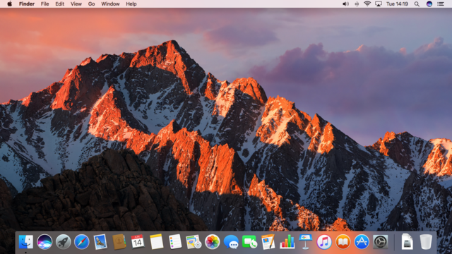
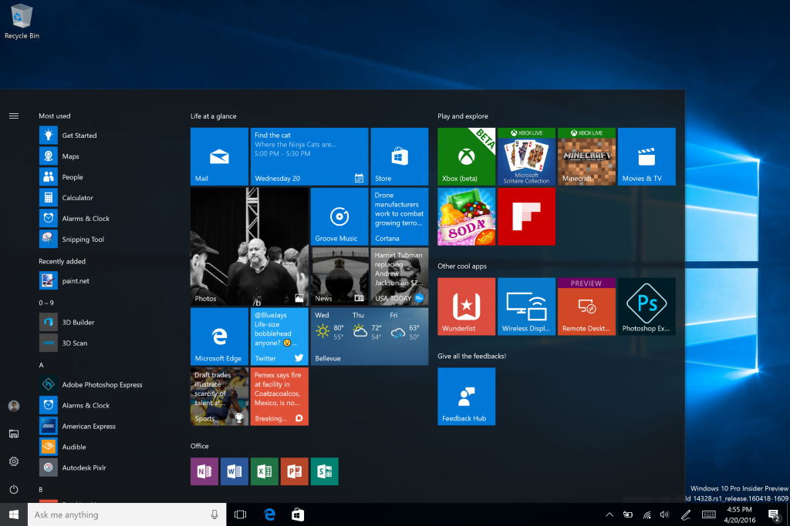

Ejemplos de sistema Desktop
MacOS
macOS, anteriormente denominado OS X e inicialmente Mac OS X, es un entorno operativo basado en Unix, desarrollado, comercializado y vendido por Apple Inc. Está incluido en su gama de computadoras Macintosh desde el año de 2002. OS X es el sucesor del Mac OS 9 (la versión final del Mac OS Classic), el sistema operativo de Apple desde 1984. Está basado en BSD, y se construyó sobre las tecnologías desarrolladas en NeXT entre la segunda mitad de los 80's y finales de 1996, cuando Apple adquirió esta compañía. Técnicamente, no es un sistema operativo, sino que incluye uno (Darwin, cuyo núcleo es XNU). Desde la versión Mac OS X 10.5 Leopard para procesadores Intel, el sistema tiene la certificación UNIX 03
Windows 10
Windows 10 es el último sistema operativo desarrollado por Microsoft como parte de la familia de sistemas operativos Windows NT. Fue dado a conocer oficialmente en septiembre de 2014, seguido por una breve presentación de demostración en el Build 2014. Entró en fase beta de prueba en octubre de 2014 y fue lanzado al público en general el 29 de julio de 2015. Para animar su adopción, Microsoft anunció su disponibilidad gratuita por un año desde su fecha de lanzamiento, para los usuarios que cuenten con copias genuinas de Windows 7 Service Pack 1 o Windows 8.1 Update. En junio de 2015 se habilitó una herramienta que permite reservar esta actualización, dicha herramienta notifica a cada usuario el momento en el que estará lista la descarga de la actualización para su dispositivo. Los participantes del programa Windows Insider pueden recibir una licencia de Windows 10, pero con ciertas condiciones
Ejemplos de aplicacio desktop
Libre Office

LibreOffice es un paquete de software de oficina libre y de código abierto desarrollado por The Document Foundation. Se creó como bifurcación de OpenOffice en 2010. Cuenta con un procesador de texto (Writer), un editor de hojas de cálculo (Calc), un gestor de presentaciones (Impress), un gestor de bases de datos (Base), un editor de gráficos vectoriales (Draw) y un editor de fórmulas matemáticas (Math).
Google Chrome

Google Chrome es un navegador web desarrollado por Google y compilado con base en varios componentes e infraestructuras de desarrollo de aplicaciones (frameworks) de código abierto,1 como el motor de renderizado Blink (bifurcación o fork de WebKit).2 3 Está disponible gratuitamente bajo condiciones específicas del software privativo o cerrado.4 El nombre del navegador deriva del término en inglés usado para el marco de la interfaz gráfica de usuario.